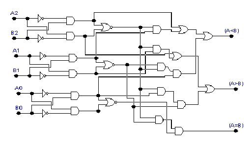

Parte del siguiente material fue extraído del libro: “Lógica Digital y Diseño de Computadores” de M. Morris Mano.
Un comparador de magnitud es un circuito combinacional que compara dos números (llamémosles A y B) y determina sus magnitudes relativas. El resultado de la comparación se especifica por medio de tres variables binarias que indican si A>B, A=B ó A Un circuito para comparar dos números de n bits tiene 22n entradas en la tabla de verdad y se vuelve más complicado aún para n=3 (64 combinaciones). Considérense los números A y B cada uno con cuatro dígitos y escríbanse los coeficientes de los números en orden significativo descendente de la siguiente manera: A= A3 A2 A1 A0 y B= B3 B2 B1 B0 Los dos números son iguales si todos los pares significativos son iguales, es decir A3=B3, A2=B2, A1=B1 y A0=B0 Sabemos que cuando los números son binarios los dígitos son 1 o 0. Por lo tanto la relación de igualdad para cada par de bits puede expresarse lógicamente con una función de equivalencia Xi = Ai Bi + Ai' Bi' OJO: Xi es en realidad una XNOR entre A y B. Esto es una XOR negada que es lo que verán en el circuito de más adelante (ésto es: [A'B+AB']') Xi es igual a 1 si y sólo si el par de bits en la posición “i” son iguales, es decir, si ambos son unos o ceros. (A=B) = X3 X2 X1 X0 La variable binaria (A=B) es igual a 1 si todos los pares de dígitos de los dos números son iguales. Para determinar si A>B se inspeccionan las magnitudes relativas de los pares de dígitos significativos comenzando desde la posición significativa mas alta. Si los dígitos son iguales, se compara el siguiente par de dígitos menos significativos y esta comparación continua hasta que se encuentre un par de dígitos diferente. Si el correspondiente dígito de A es 1 y el dígito de B es 0, se concluye que A>B. Si el correspondiente dígito de A es 0 y el de B es 1 se tiene que A (A>B) = A3B3' + X3A2B2' + X3X2A1B1' + X3X2X1A0B0' (A Los símbolos (A>B) y (A Analicen las funciones anteriores y entiendan el por qué de esa forma. Por ejemplo: ¿Por qué Basándonos en lo anterior, veamos a continuación la implementación de un circuito comparador pero de sólo 3 bits y hecho con compuertas:  Puede conseguir más información en este link de la Wikipedia. Está pendiente por agregar en el futuro algún comentario de los Comparadores de magnitud a nivel MSI como por ejemplo el comparador de magnitud de 4 bits 7485 y alguna implementación en cascada para comparar más de 4 bits. Este fue el último tema de la materia.
para todo i= 0,1,2,3,......., etc.A3B3' + X3A2B2' + X3X2A1B1' + X3X2X1A0B0' es uno si y sólo si A es mayor que B? ¿Por qué están formados de esa manera los términos 2, 3 y 4 de esa función? ¿Qué quieren decir?